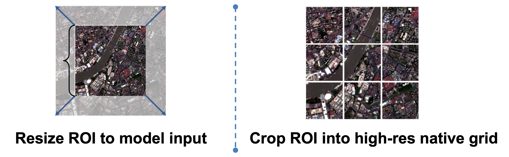
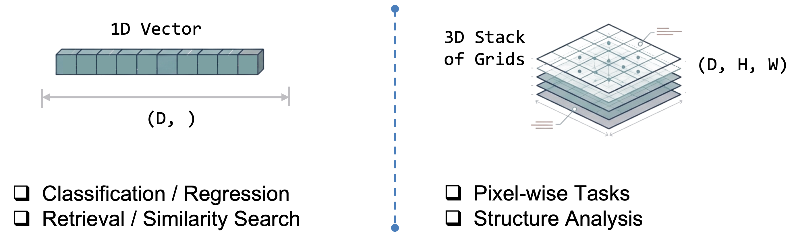

Choosing Settings for Better Embeddings¶
Every model in rs-embed ships sensible defaults that work out of the box.
If you have more compute budget — faster GPUs, more memory, or simply more patience — you can trade that compute for higher-quality embeddings by tuning a handful of settings.
This page helps you decide which knobs to turn and when.
Important
A more expensive setting is not automatically a better setting. It is only better if it matches your task. Treat every setting change as part of experiment design, not just performance tuning.
Quick Decision Guide¶
| I want to ... | Setting to change | What it costs |
|---|---|---|
| Preserve more spatial detail on large ROIs | input_prep="tile" |
More inference calls, higher latency |
| Get finer source imagery | fetch=FetchSpec(scale_m=...) with a smaller value |
More data download, more memory |
| Use a larger backbone | variant="large" (if available) |
More GPU memory and latency |
| Increase image resolution | Model-specific ..._IMG env vars |
Compute grows quickly with image size |
| Get denser spatial tokens | Model-specific ..._PATCH env vars (smaller value) |
Higher token count and memory |
| Capture finer temporal detail | RS_EMBED_ANYSAT_FRAMES, RS_EMBED_GALILEO_FRAMES |
More frames = more runtime |
| Keep spatial structure in output | OutputSpec.grid() instead of .pooled() |
Larger outputs, heavier downstream processing |
Settings In Detail¶
Input preparation: resize vs tile¶

This is often the first and most impactful quality-versus-runtime decision.
input_prep="resize" |
input_prep="tile" |
|
|---|---|---|
| Best for | Moderate ROIs, fast screening | Large ROIs, spatial-detail tasks |
| How it works | Compresses the ROI into one image | Splits the ROI into overlapping tiles |
Output with grid() |
Single grid | Stitched spatial field |
| Runtime | Fastest path | Scales with tile count |
See also API Specs — InputPrepSpec and Common Workflows.
Output mode: pooled vs grid¶

OutputSpec.pooled() |
OutputSpec.grid() |
|
|---|---|---|
| Best for | Similarity search, classification, cross-model comparison | Spatial analysis, patch-wise tasks, map-like outputs |
| Shape | One vector per ROI | 2-D spatial field of vectors |
| Storage | Small | Large |
Note: for token-based models the backbone forward pass is often the same — the main difference is whether rs-embed pools tokens or reconstructs a spatial field afterward. So pooled is the safer default mainly because it is easier to interpret and compare, not because grid always costs much more at inference time.
Model variant: tiny / small / base / large¶
If a model exposes variant, that is the cleanest way to spend more compute for more capacity — it upgrades the backbone without changing input construction.
- Use the smallest acceptable variant for fast screening.
- Use
baseas the default comparison point. - Use
largeonly after a smaller variant already shows task value.
Check the model detail page before assuming which variants exist. For example, THOR and DOFA expose explicit size choices, while some models only ship one variant.
Image size and patch size¶
These control how much spatial detail survives preprocessing and how dense the token grid becomes.
- Larger image size preserves more detail but increases compute quickly.
- Smaller patch size gives denser tokens but raises memory cost.
- Many models require
image_size % patch_size == 0. If you change one, re-check the other on the model detail page.
Fetch resolution and compositing¶
fetch=FetchSpec(...) controls how source imagery is sampled before it reaches the model.
- Smaller
scale_mmeans finer spatial sampling. composite="median"is usually the safer default for a temporal window.- Changing fetch resolution can change embedding semantics, not just sharpness — especially for models whose training depends on scale assumptions (e.g.
scalemae) or time-series models where provider sampling interacts with temporal packaging.
Temporal window and frame count¶
Relevant for sequence models such as anysat, galileo, and agrifm.
- Keep the temporal window meaningful for the real task.
- Increase frame count only if you actually want a finer temporal summary.
- A model with 8 frames is not simply a slower version of the same 4-frame experiment — it is a different temporal design choice.
Model-Specific Examples¶
THOR¶
THOR exposes several user-facing knobs: variant, input_prep, RS_EMBED_THOR_PATCH_SIZE, RS_EMBED_THOR_IMG, and RS_EMBED_THOR_RESIZE_MODE.
- Smaller
RS_EMBED_THOR_PATCH_SIZE→ denser spatial tokens, higher compute. - Larger
variant→ more backbone capacity. input_prep="tile"→ usually the safer choice for large-ROI grid extraction.- If
patch_sizechanges, re-check whetherRS_EMBED_THOR_IMGstill divides cleanly.
For exact constraints, see THOR.
AnySat and Galileo¶
For multi-frame models, frame count is part of the model design.
- Increasing
RS_EMBED_ANYSAT_FRAMESorRS_EMBED_GALILEO_FRAMESgives a finer temporal summary. - Increasing
..._IMGpreserves more per-frame detail. - Changing
..._PATCHalters grid density and often has divisibility constraints.
For exact details, see AnySat and Galileo.
Practical Workflow¶
1. Start with defaults¶
from rs_embed import PointBuffer, TemporalSpec, OutputSpec, get_embedding
emb = get_embedding(
"thor",
spatial=PointBuffer(lon=121.5, lat=31.2, buffer_m=2048),
temporal=TemporalSpec.range("2022-06-01", "2022-09-01"),
output=OutputSpec.pooled(),
backend="gee",
)
2. Spend extra compute where it helps¶
from rs_embed import InputPrepSpec, OutputSpec, PointBuffer, TemporalSpec, get_embedding
emb = get_embedding(
"thor",
spatial=spatial_point,
temporal=temporal_range,
output=OutputSpec.grid(),
modality="s2",
input_prep=InputPrepSpec("tile", max_tiles=300),
)
This second call is not just "the same run but more expensive". It changes output structure, ROI handling, and spatial detail together — document it as a different setting profile.
3. Inspect what actually ran¶
from rs_embed import describe_model
desc = describe_model("thor")
print(desc["defaults"])
print(desc.get("model_config"))
print(emb.meta["input_prep"])
Use describe_model(...) before inference to see supported settings, and Embedding.meta after inference to record what the run actually used.
What to Record for Reproducibility¶
At minimum, record:
- Model ID and
variant - ROI definition
- Temporal window or year
fetch.scale_mand compositing policyinput_prep- Output mode
- Model-specific knobs (image size, patch size, frame count, normalization, modality)
If these are not fixed, "better embeddings" becomes an untraceable mix of changed model, changed preprocessing, and changed source data.
Where to Go Next¶
- Models — shortlist a model family.
- Advanced Model Reference — side-by-side preprocessing and temporal comparison.
- Each model detail page — exact supported knobs and constraints.